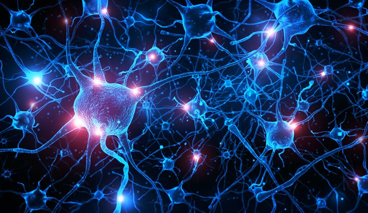
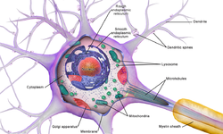

A CÉLULA
O neurônio, ou célula nervosa, é a unidade fundamental do sistema
nervoso dos animais. É uma célula altamente especializada,
encontrada não apenas no cérebro e no sistema digestivo, mas também
na medula espinhal e nos nervos periféricos por todo o corpo.

.jpeg)
SUAS FUNÇÕES
Sua função principal é a comunicação. Os neurônios são responsáveis
por receber, processar, transmitir e armazenar informações através
de sinais elétricos e químicos, conhecidos como impulsos nervosos.
Essa rede de comunicação forma a base de todas as funções nervosas,
incluindo pensamento, memória, movimento, sensações e a regulação de
processos automáticos como a digestão.
ESTRUTURA
-
Soma (Corpo Celular): É a parte central do neurônio, que abriga
o núcleo (contendo o DNA) e a maior parte do citoplasma e das
organelas (como mitocôndrias e complexo de Golgi). O soma é o
centro metabólico da célula, responsável pela síntese de
proteínas e por gerar a energia necessária para suas atividades.
Seu tamanho e formato variam de acordo com o tipo de neurônio.

-
Dendritos: São prolongamentos numerosos, curtos e altamente
ramificados que se estendem a partir do soma. Sua função
principal é atuar como "antenas" da célula, recebendo estímulos
químicos (neurotransmissores) de outros neurônios ou do ambiente
e convertendo-os em sinais elétricos. Esses sinais são então
transmitidos em direção ao corpo celular para serem processados.

-
Axônio: É um prolongamento único, longo e fino, especializado na
condução do impulso nervoso para longe do corpo celular. Sua
função é transmitir a informação processada no soma para outras
células, que podem ser outros neurônios, células musculares ou
glândulas. Muitos axônios são revestidos por uma bainha de
mielina, uma substância lipídica que atua como um isolante
elétrico, aumentando significativamente a velocidade de
transmissão do impulso. A região final do axônio, chamada
terminal axônico ou botão sináptico, é onde o sinal elétrico é
convertido em um sinal químico para ser passado adiante através
da sinapse.